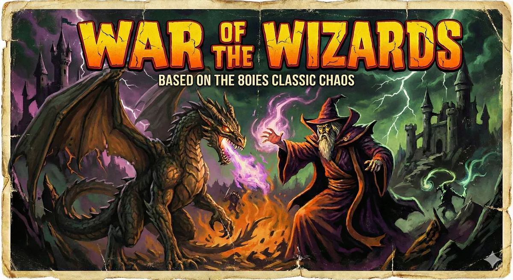

Turn-based fantasy tactics
War of the Wizards
One spell can turn the battle.
About the game
Magic. Monsters.
A dangerous bluff.
Chaos: The Battle of Wizards is Julian Gollop's 1985 ZX Spectrum classic: rival wizards summon creatures and fight to be the last one standing. A summoned monster can be an illusion. Call the bluff with Disbelieve, or risk facing a very real dragon.
War of the Wizards brings that idea to Sabnock Works' own turn-based arena. Command one of up to eight wizards, choose from 73 spells and send your creatures into battle. Play against the AI or share one screen with friends. The optional Law/Chaos balance shifts your casting chances as the fight unfolds.
The Windows demo gives you ten complete rounds per match. Start a fresh match afterwards and try a different plan.
Try the Windows demoFrom the battlefield
Watch the wizards at work.
See War of the Wizards in action in the YouTube playlist.